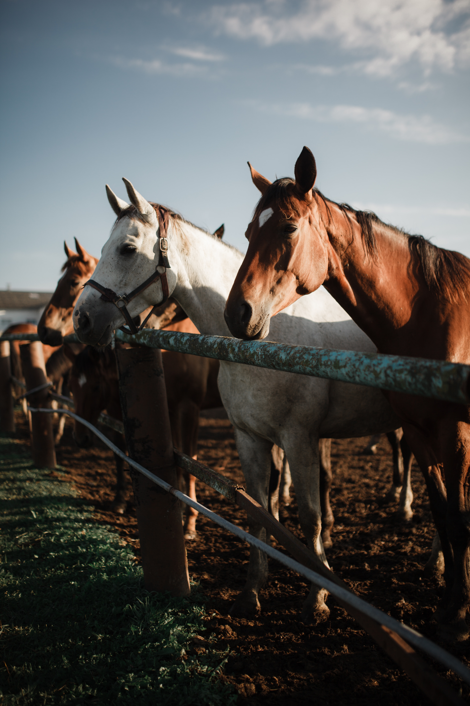
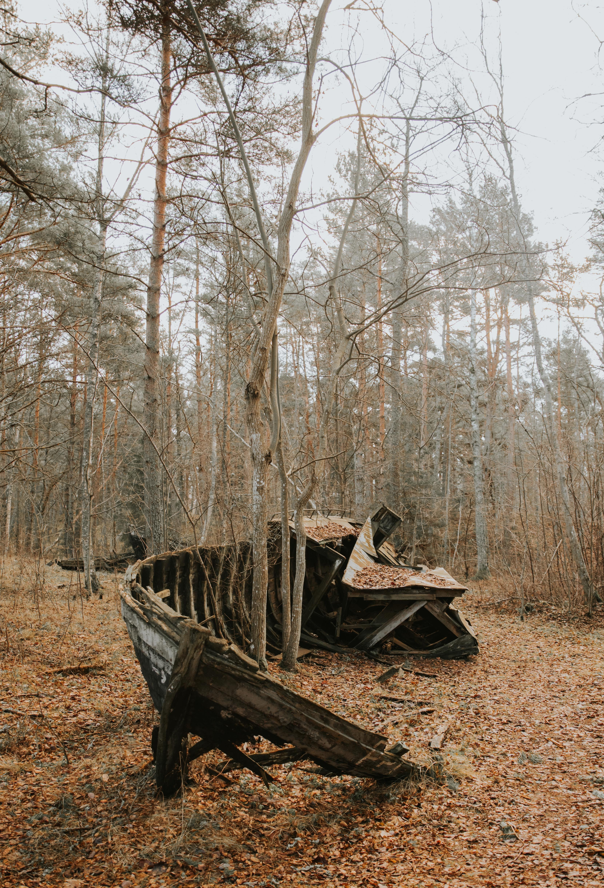
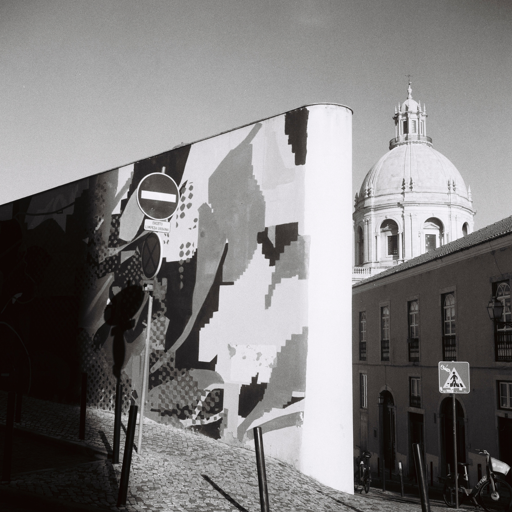
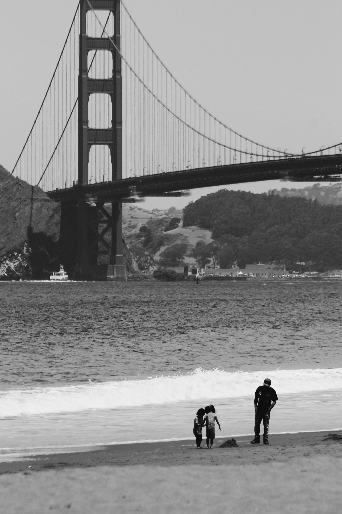

Com uma câmera na mão e uma paixão pelo registro fotográfico, Roilson conta histórias através das suas lentes. Ele tem um olhar atento para capturar as expressões mais singulares das pessoas, a natureza em seu estado mais puro e as cores e formas que fazem da vida um verdadeiro espetáculo.
Em cada projeto, Roilson trabalha com cuidado e atenção aos detalhes para capturar as emoções e a personalidade de seus clientes. Suas fotos não apenas mostram a beleza do mundo, mas também a força e a resiliência dos indivíduos que habitam nele. Seu talento em capturar a essência de seus assuntos é o que o diferencia dos demais fotógrafos, tornando suas imagens únicas e memoráveis.
Seu portfólio é um testemunho de sua habilidade em contar histórias através de imagens e da paixão que ele tem por seu trabalho. Com Roilson, você pode ter a certeza de que as suas memórias serão registradas com a mais alta qualidade e sensibilidade.
Convidamos você a conhecer o trabalho de Roilson, um fotógrafo que sabe como capturar o momento certo e transformá-lo em arte.
